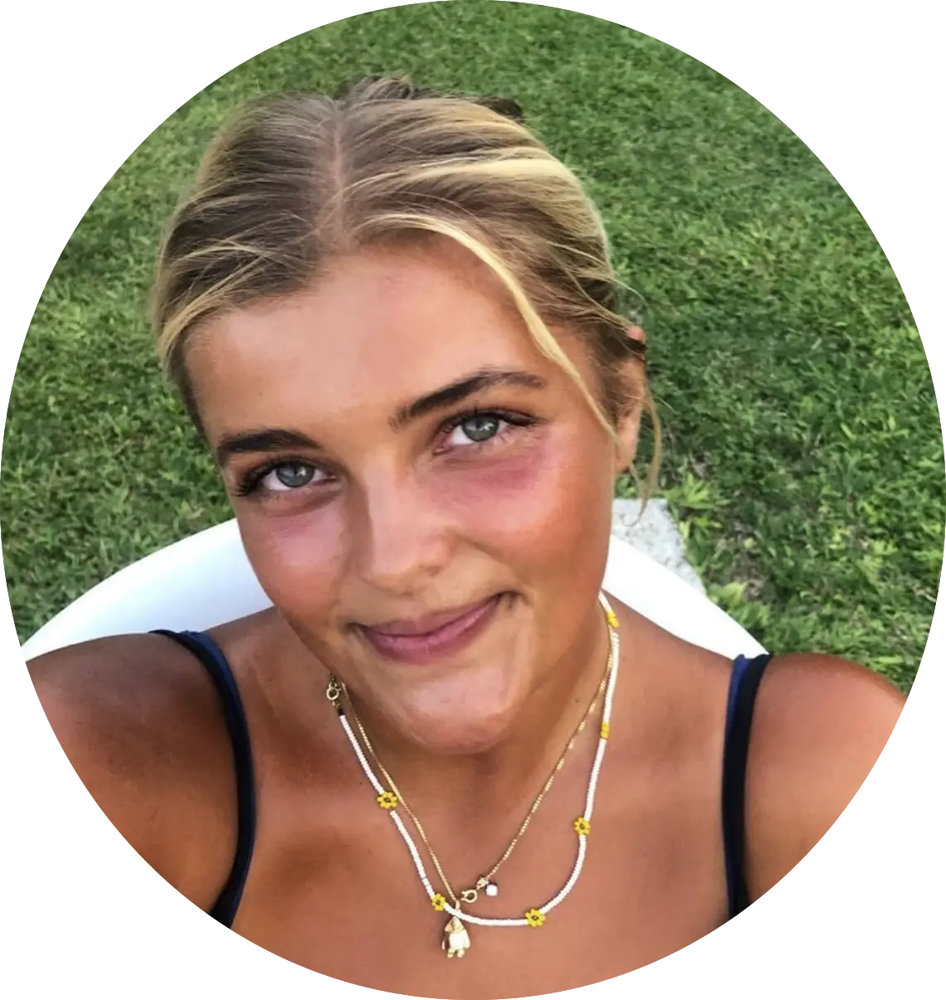

OM MIG
Uddannelse
Mit navn er Dagmar Louise Licht. Jeg er 23 år gammel og går studerer Multimediedesign på første semester på KEA - Københavns Erhvervs Akademi.
Mit navn er Dagmar Louise Licht. Jeg er 23 år gammel og går studerer Multimediedesign på første semester på KEA - Københavns Erhvervs Akademi.